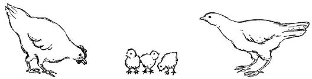
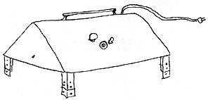
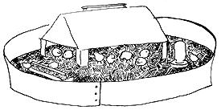
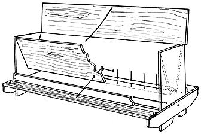
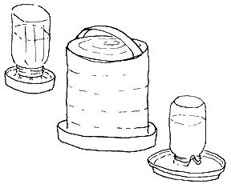
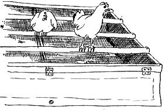
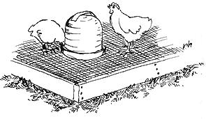
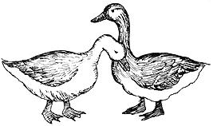

The three main reasons for starting poultry on a homestead, in case you haven't given it much thought, are: (1) Fresh, fertile, organic eggs, (2) Fresh, fertile, organic chicken manure and (3) Fresh, organic chicken meat (unless, of course, you're vegetarian-in which case the first two points are reason enough . . . and if you're a super strict vegetarian, No. 2 alone will still justify the project.)
You might have thought that eggs-any eggs-are organic. No, they aren't. Most supermarket eggs come from egg factories (see HEALTH IS FOR THE BIRDS, in this issue) where chickens are confined to small wire cages stacked in endless rows. The layers are never allowed to set their chicken feet on the ground . . . or even stretch their wings, I guess.
Needless to say, such living conditions, even for birds, are BAD. Disease would run rampant were it not for antibiotics that are automatically fed as a preventative. The average life span of one of these chickens is 18 months and the eggs laid in an egg factory are-to say the least-tasteless. Their nutritional value is questionable and their possible antibiotic content is deplorable. So, since one of the reasons for moving back to the land was wholesome, natural food for our family . . . chickens!
The little grocery-feed store in our area offered some special chick bargains last spring. One was 100 heavy-breed cockerels free with the purchase of 250 lbs. of chick starter. The store also offered other chicks at wholesale prices.
We decided on a heavy breed of chicken because we like big, brown eggs; we think the larger birds offer the tastiest meat; we wanted to look at chickens that were some color other than white; and we didn't care for the nervous little Leghorns, bred to be egg-producing machines.
We ordered straight-run chicks. This means that, at the hatchery, the baby chickens were boxed without being sexed. There's no guarantee on how many of either sex will be in any order of straight-runs but it usually averages about 50-50 and straight-run chicks cost several cents less each than sexed chicks. If you'll be eating some (or all) of your chickens anyway, straight-runs are the best buy.
Straight-run chicks are a double good buy if you want some roosters in your flock . . . and we wanted roosters: (1) To insure the production of fertile eggs (thought to be more nutritious), (2) To allow us to try raising our own chickens from the eggs up and (3) For wake-up crowing in the morning.
Poultry books and pamphlets we consulted (including the HA VE-MORE Plan in MOTHER NO. 2) suggest that you order three times as many straight-run chicks as you want laying hens. This allows for chicks that grow up to be roosters, deaths or disablements from disease and the hens that, for some reason, never lay. Since we figured that twenty-five was a nice number of hens to start with, we ordered 75 straight-run assorted heavy breeds at 15 cents per chick. We were told that they would be mailed in about two weeks. Yes, mailed. In a cardboard box.
Two weeks is plenty of time to get a chicken place ready. The 24-acres we bought had, as outbuildings, only a shed big enough for our three goats and a falling down two-story house. We had already salvaged one room of the old house as a painting studio so we decided we could salvage another room for a chicken place.
The room we decided on had windows facing the north, west and south. Chickens need a warm southern exposure in the winter but they don't need drafts from the north so we cut the north window down and made it into a door. Keith built the door out of plywood and 2X4 scraps and it has a hinged trapdoor at the bottom so that the main panel can be kept closed in cold weather.
We covered the other two windows with chicken wire and built outside shutters (to be closed in the winter) for the one on the west. After covering several holes in the wall with plywood scraps (to keep out rats and cats), we cleaned and swept the place.
If you start chickens in an old chicken house, you'll have to remove all old litter and dirt as there are a jillion chicken diseases and the germs can hide a long time. Many old farms have a little shed or building that was intended for chicken brooding. You still gotta clean it out and it's a good idea to hose the inside down or wet broom it all over with a disinfectant. Watch out for the inevitable wasps!
The next thing you'll need for your chicks is litter. You have to put something down to absorb the chicken droppings and keep the floor dry. The best litter we've found is sawdust. We buy it from a saw mill for $1.25 a pickup load, put down a little sand first and spread an inch or two of sawdust evenly over the floor. As the litter becomes dirty, we spread more sawdust on top. With this method, you clean out the whole thing only twice a year and put it on your garden or compost heap. While you're cleaning the chicken house, of course, you concentrate on the beautiful vegetables you'll harvest as a result.
Chicken litter must be kept dry. If it becomes damp or soaked from rain or spilled water. remove the wet and put down fresh. Disease germs thrive in damp litter and chickens do not. Straw (even shredded straw, which we tried) does not make good litter. It's not absorbent enough. You can use newspapers in a pinch but they must be changed every day. All this is not as complicated as it sounds, by the way. Chickens help keep their litter dry by scratching around and stirring it up.
One piece of equipment you'll need is a brooder. Chicks are 24-72 hours old when you receive them and, for the first four to six weeks, they must be kept warm! Hold your brooder at 90° F for the initial week or ten days, then gradually reduce it to normal temperatures.
We were lucky enough to find a 25 year old electric brooder that had been lying around an uncle's farm . . . and it still works! The brooder has a thermostat, a removable thermometer and a little fan inside to distribute the heat. A small light bulb (also inside attracts the chicks to the warmth and another bulb on the outside shows when the heating element is on.
If you don't have or can't locate a brooder, you can find or make a sort of hover or giant, reflecting lamp shade. By using different sizes of bulbs and raising and lowering the hover, you can regulate the temperature. It will, of course, take a lot of watching and checking. Be sure to put a thermometer down at chick level.
When chickens are little you can feed them out of flat feed troughs but feeder that holds about 100 pounds of mash. Here's a nifty feeder that dad designed and which we used for years and years when we raised a lot of chickens. It's made of scrap pieces of 1 X 12 and 1 X 4 and a few other odds and ends. We'll have detailed plans for you in MOTHER NO. 8.-JS
Since our chicken room is big and high-ceilinged, we ordered the chicks to arrive the last part of May when the weather would be warmer. Altogether, we used the brooder about four weeks and it added approximately $8.00 to our electricity bill.
The only other hardware you'll need right away are waterers and feeders especially made for little chicks. Most poultry books have specifications for feeders and you can build them yourself. You can also improvise waterers of mayonnaise jars and pie pans for a few days as we did. Knock a little chip out of the rim of each jar, being careful to keep the indentation shallower than the rim of the pan in which it is set. Pretty soon, though, the chicks will get frisky enough to knock over such a rig. Gallon size waterers (they cost $4.00 to $5.00 new) are much better and I'm sure there are old, unused ones around. There are also chick waterers that screw onto mason jars.
Our baby chickens arrived one day late. Surprisingly, they looked none the worse for their stay in the cardboard box. We dipped the beak of each one into warm water and set the babies under the brooder. You should make a fence of cardboard or sheet metal to keep the chicks from wandering away and losing the warm place. After a couple of weeks you can begin moving the fence (gradually!) away from the heater. Round off any square corners with cardboard because if the chicks become chilled they may pile up in a corner and smother the little guys on the bottom.
Baby chicks are just as cute as you remember and we couldn't stay away from ours the first few days. We had three different types: Traditional yellow fluff; brown with darker brown stripes on their backs; and beige with brown stripes. The yellow ones grew up white (probably Plymouth Rocks), the brown are now beautiful reddish-brown with black tails (maybe a Rhode Island Red cross) and the beige matured into white with black spots (possibly Barred Rock).
We were fortunate enough to meet an organic farmer who-though our age and raised in the suburbs-has lived on his farm for 10 years. We ask his advice on most farm-type ventures. When we inquired about commercial chick starters, he told us that hatchery chicks are not nearly as hardy as farm-raised and we should probably use the widely-sold medicated mash for a few weeks. I asked at the feed store to see the list of ingredients in chick starter and found that it contains many grains, lots of synthetic vitamins (even some HEW doesn't recognize as essential to people) and a form of antibiotic called Amprolium. We didn't want antibiotics in our eggs or chicken meat so we decided to feed the medicated mash for as short a period as possible.
The chicks filled out and grew very fast on the starter and were sprouting little wing feathers in one week. By the time they were two weeks old they were already scraggy and homely looking. Then, at two to three weeks of age, a few of our chicks developed coccidiosis. Or, at least, that's what the symptoms appeared to be (there's nothing like pouring over a good book of chicken diseases!)
The sick chicks looked droopy, weak and had dirty behinds. Occasionally we'd see blood in the droppings. We removed the sick ones to a little pen where they either got better or died. We only lost 6 or 7 chicks and learned that some poultry raisers allow a mild outbreak of coccidiosis as an immunization.
When we finally got the chicken fence built (ask someone else how to put up chicken wire . : . apparently we don't know how), the chicks came pouring out the door like a flood. They wanted to be outside and they needed to be outside for vitamin D from the sun, grit and minerals from the ground and whatever bugs and green leaves they could find.
At about four weeks, we started adding wheat and cracked corn to the chicken's diet and slowly eliminating the mash (which is expensive). Then we added some oats and soybean meal and a little meat scrap (bought in 50 lb. bags). In addition, we now feed the birds the yellow, fat cucumbers, rotten or buggy tomatoes, squishy squash and pumpkins, old lettuce and other spoiled vegetables from our garden. They also eat most of the kitchen waste, even crushed egg shells.
We've now built a roost out of 2X2s that were beveled with a planer. Just under the roost is a piece of screen wire to keep the chickens out of the droppings and to catch any eggs laid from that vantage point. At the front is a hinged door to facilitate the mining of that garden gold.
Although we haven't constructed one yet, a feeder and waterer platform would save a lot of labor since the chickens scratch around a lot and get litter into these self-serve utensils. A four-inch high platform covered with screen wire could be made big enough for the waterers and feeders and rows of chickens around each one.
When our chicks were six weeks old we bought six Araucana, or Easter egg chickens, from a lady who lives near us. These are the beautiful little birds with a gamey appearance (developed by the Araucana Indians of Peru) that lay either pink, blue or beige eggs. About the same age as the other chickens (but newcomers), the Araucanas are considered at the bottom of the pecking order by the original flock. There's no need to worry about the perky little birds, though. Araucanas can dodge, fly, flit and skitter out of reach in a way that makes the other chickens look clumsy.
We paid 75 cents each for the Araucanas and the lady had started pullets (birds about ready to lay) for $1.50 apiece. Buying such pullets is a good way to start a laying flock for those who have the money and inclination.
At the same time we bought the Araucanas. we enlarged our poultry holdings by one pair of two year old geese that cost us $6.00. Geese are really fun to have around. Ours walk haughtily around the yard eating grass and an occasional handful of corn. Otherwise they need no care . . . except a simple shelter in the winter. They take a daily dip in what used to be the kids' wading pool, but really need swimming water only at breeding and nesting time.
The lady who sold us ours says that geese usually hatch two nests of eggs in the spring and the gander gets a little cranky when the hen starts to lay. Once she's brooding eggs, however, she chases him away and he comes around-honking forlornly-seeking human companionship.
Our geese, gray and white-the gander with bright orange bill and feet-are beautiful birds. They follow us around but will only let us pet them at night, when we are sitting outside and THEY approach US. If we don't barricade the porch, they like to sleep right in front of the door.
As I write this, our chickens are three months old and the roosters have bigger combs and wattles than the pullets. It will be a few months before we get much return from them. Heavy breed pullets don't start to lay until around six months old and they don't lay much in cold weather. So it may be spring before we see an egg.
We have eaten only one chicken so far. Although he looked nice and fat, it was mostly bluff and feathers. The drumsticks were really dainty! The actual butchering was unpleasant but bearable. We believe in the Indian way of explaining to an animal why you need it.
Besides the three reasons mentioned in the first paragraph for having poultry, there's another one: FUN! Lots of evenings we sit by the chicken pen watching the chicken society. The adolescent roosters have mock cock fights, the pullets chase the little crooked footed one into the bushes and Araucanas sail over the fence like doves. The geese then come whirling by, flapping their wings (maybe keeping in shape in case they ever want to fly off). Then the geese stop, touch their bills lightly together and GANAWK! loudly, talking to each other.
I wonder where we can find some ducks.
|
 |
 |
 |
|
 |
 |
 |
|
 |
 |
|